Zasady Gry Saper
Celem gry Saper jest odkrycie wszytskich kafelków, które nie są minami
- Odkrywanie pól: Kliknięcie lewym przyciskiem myszy odkrywa pole. Jeśli odkryte pole jest miną, gra kończy się przegraną
- Odkryte pola: Gdy kafelek jest odkryty i na tym polu nie znajduje się mina, na tym polu wyświetli się liczba od 1 do 8 lub pustę pole. Cyfra na kafelku oznacza ile min znajduję się w sąsiectwie tej cyfry.
- Oflagowanie min: Gdy zyidentyfikujemy pole na który napewno znajduję się mina, możemy ją oznaczyć flagą. Pole można oznaczyć flagą przez kliknięcie prawym przyciskiem myszy. Flaga zapobiega przypadkowemu kliknięcie w minę
- Zwycięstwo: Gracz wygrywa gdy odkryję wszytskie pola nie będące minami
Poziomy trudności
Oryginalna gra z systemu Windows zawiera 4 poziomu trudności.
- początkujący - plansza 8x8 pól, 10 minut, ryzyko trafienia w minę: 15,625%
- zaawansowany - plansza 16x16 pól, 40 minut, ryzyko trafienia w minę: 15,625%
- ekspert - plansza 30x16 pól, 99 minut, ryzyko trafienia na minę: 20,625%
Historia Gry Saper
Początki Gry
Autorem gry jest Curt Johnson, który napisał tą grę dla systemu operacyjnego OS/2. Następnie Robert Donner stworzyć wersję dla systemu Windows w 1990 roku, która została dodana do Windows Entertainment Pack. Póżniej została na stałe dodana do Windows'a 3.1. Gra Minesweeper była dostępna w każdym systemie operacyjnym Microsoft do wersji 7. Od wersji 8, gra saper mogła być pobrana ze sklepi Windows.
Popularność Sapera
Gra szybko zyskała popularność przez swoją prostotę i bardzo angażującą rozgrywkę, którą cieżko przerwać. Dla pracowników biurowych była to idealna odskocznia od pracy i zajęcie myśli na kilka minut. Ponoć sam Bill Gates był wielkim fanem tej gry, do takiego stopnia, że kazał usunąć sapera z jego komputera. Ponoć zakradał się do komputerów spółpracowników i potajemnie grał. Do czasu, gdy dyrektor wykonawczy Microsoftu Mike Hallman napisał skrypt, który ukończył grę w jedną sekundę. W ten sposób udowodnił CEO Microsoftu że nie wygra z maszyną. Warto również wspomnieć że jednym z celów sapera jak i innych gier zawartych w systemie Windows, było nauczenie użytkowników korzystania z myszki. Wczesniej komputery były w większości obsługiwane przez klawiaturę. Dla wileu użytkowników myszka była nowym sposobem obsługiwania komputera, więc ich umiejśtności i dokładnośc kliknięcia była niska. Pakiet gier systemu Windows miał w przyjemny i niezobowiązujący sposób nauczyć użytkowników precyzyjnego używania myszki.
E-sport i rekordy
Przez ogromną popularność sapera, pojawiły się również turnieje e-sportowe, ustrukturyzowane zasady i sposób oceny wyników. Ponieważ gra Saper jest grą losową (plansza jest generowania przez komputer) i mogą się zdarzyć sytuacje rozwiązania całej planszy przez tylko jednym kliknięcie. Powstał algorytm 3BV, który oblicza minimalną liczbę kliknięc lewym przyciskiem myszy (bez stawiania flagi). Dlatego dla każdego poziomu trudności wyznaczono minimlną wartość 3BV: początkujący - 2, zaawansowany - 30, ekspert - 100. Główną metryką oceny gry jest czas rozwiązania planszy. Istnieje również alternatywny sposób oceniania gry, który liczy kliknięcia gracza i dzieli tą wartośc przez 3BV. W tym systemie rankigowym sprawdza się jak zawodnik optymalnie rozwiązał planszę, minimalizując losowość. Więcej o zasadach możesz przeczytać na stronie poświęconej zasadon rankingowym Sapera.
Warto również zaznaczyć że są dwa style rozwiązywania Sapera
- FL (With Flags)Klasyczny sposób rozwiązywania gdzie gracz stawia flagi i używa kliknięcia do szybkiego odsłaniania liczb.
- NL (No Flags)Trudniejszy sposób, głownie używany przez bardziej zaawansowanych graczy. Gracz nie stawia flag i zapamiętuję w którym miejscu znajdują się miny.
| Poziom | Kategoria | Data | Czas (s) | Zawodnik | Współczynnik 3BV |
|---|---|---|---|---|---|
| Ekspert | WF | 23.08.2022 | 26.59 | Ze-En Ju | 138 |
| NF | 20.04.2022 | 30.39 | Ze-En Ju | 144 | |
| Zaawansowany | WF | 31.03.2022 | 05.80 | Ze-En Ju | 30 |
| NF | 11.10.2012 | 07.03 | Kamil Murański | 30 | |
| Początkujący | WF | 03.01.2021 | 0.45 | Michał Szoplik | 2 |
| NF | 03.01.2020 | 0.45 | Michał Szoplik | 2 | |
| Źródło: Ranking Sapera | |||||
Różne aplikacje sapera
Gra saper doczekała się wielu klonów, implementacji, modyfikacji i tym podobnych.
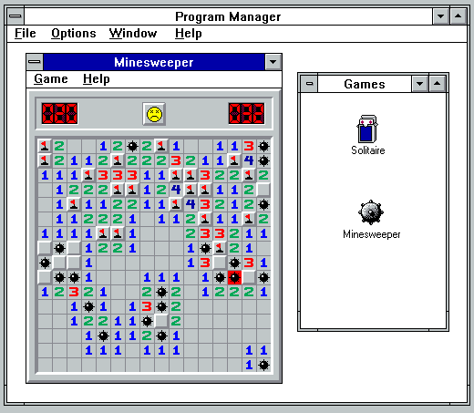
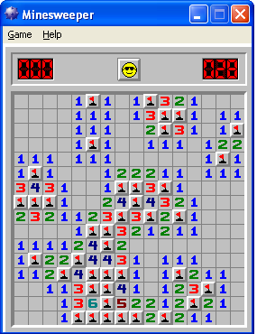
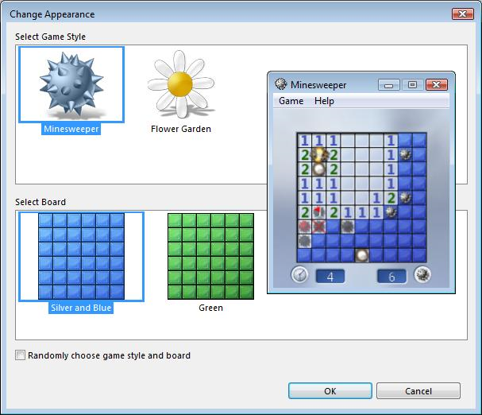
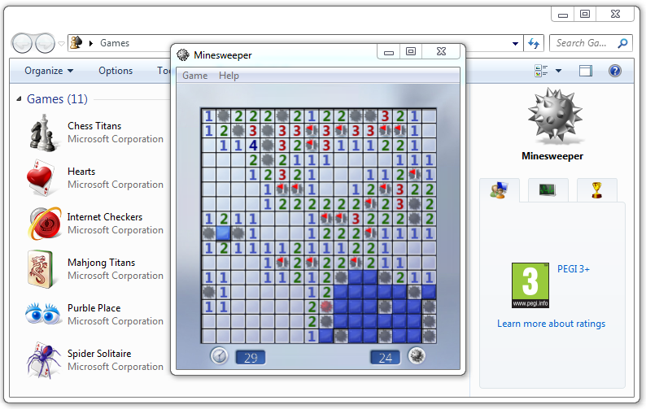
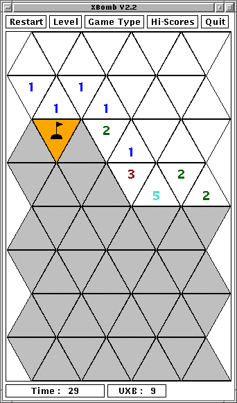
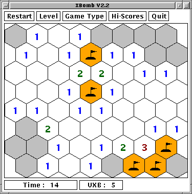
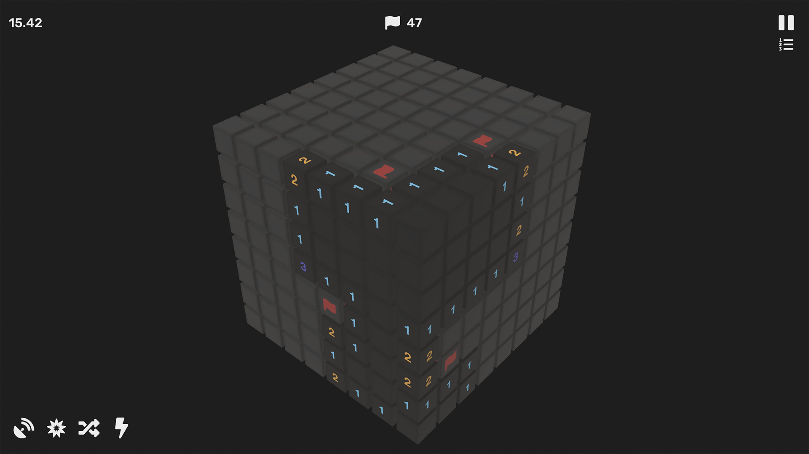
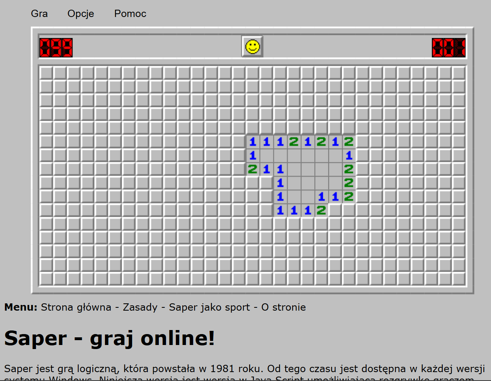
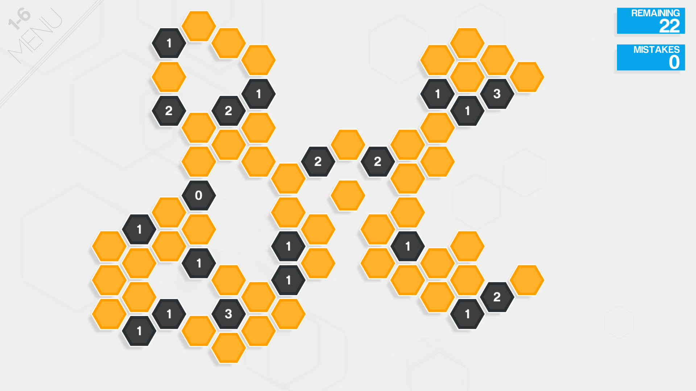
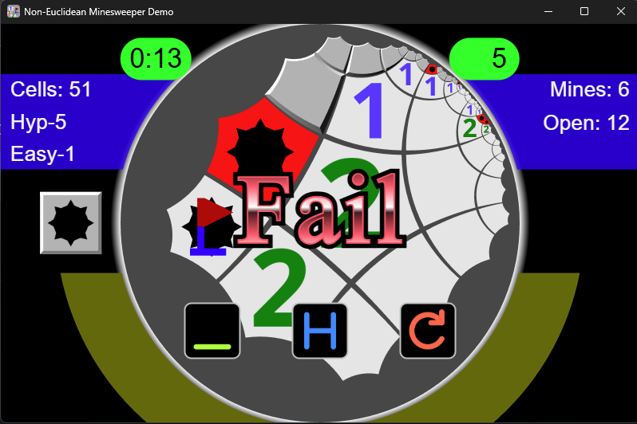
Zagraj w sapera
tu bedzie gra saper
Jak być lepszym?
Aby być lepszym w grze Saper, warto nauczyć się rozpoznawać typowe wzorce liczbowe na planszy. To pozwala na lepsze planowanie ruchów i zwiększa szanse na zwycięstwo.
Typowe wzorce liczbowe gwarantujące postęp w grze
Wzorzec 1-1 przy krawędzi planszy
Rozważając dwie górne cyfry "1". Jedynka na samej górze posiada dwa możliwe pola w których może znajdować się mina. Te same pola są dzielone z "1" poniżej. Więc trzecie pole które tej jedynki musi być bezpieczne (nie zawierające miny) - zielony

Wzorzec 1-1-1 ciąg jedynek
Ten wzorzec jest kontynułacją wcześniejszego wzora. Dwie górne "1" współdzielą dwa przyległe pola. Musi być w nich dokładnie jedna mina. Skoro ta mina zaspokaja zarówno pierwszą, jak i drugą jedynkę, to pola znajdujące się w zasięgu trzeciej i czwartej jedynki, ale poza zasięgiem tych pierwszych, muszą być całkowicie bezpieczne (zielone)
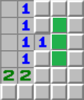
Wzorzec 3-1
Cyfra "3" styka się z czterema zakrytymi polami i potrzebuję aż trzech min. Jednak cyfra "1" nad nią wymusza że na dwóch polach (żółtych) znajdzie się tylko jedna mina. Więc na pozostałych cyfry "3" niestykających się z cyfrą "1" muszą znajdować się miny. Dodatkowo pole ponad żółtą strefą "1" jest bezpieczne (zielone).
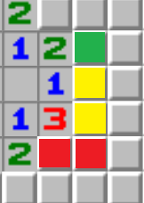
Wzorzec 1-2-1
Cyfra "2" potrzebuję dwóch min na trzech sąsiadujących polach. Gdyby mina znajdowała się na środkowym polu (zielonym), zaspokoiłaby obie sąsiadujące "1", co uniemożliwiłoby umieszczenie drugiej miny dla cyfry "2", bez łamania zasad. Więc jeśli mina nie może znajdować się na środkowym polu, miny muszą się znajdować na dwóch pozostałych polach. Dodatkowo umieszczenie tych dwóch min zaspokaja obie jedynki, więc wszystkie pola "1" nie sąsiadujące z "2" są bezpieczne (zielone).

Wzorzec 1-3-1 na rogu
Ten wzorzec jest szczególną sytuacja wzorca 3-1, gdzie w sąsiedztwie cyfry "3" znajdują się dwie "1". Wiemy dla każdej jedynki są dwa pola (zółte) gdzie znajduje się po jednej minie. Cyfra 3 jest zaspokojona przez dwie miny które sąsiadują z "1", więc trzecia mina musi znajdować się na rogu z "3" (czerwone). Dodatkowo miejsca które sąsiadują z "1" i nie sąsiadują z "3" są bezpiczene (zielone).

Wzorzec 1-4
Cyfra "4" musi znaleźć cztery miny na pięciu sąsiadujących polach. Cyfra "4" styka się z "1", która posiada dwa wspólne pola z "4", na których może znajdować się tylko jedna mina. Z tego wynika że na pozostałych polach "4" muszą znajdować się pozostałe trzy miny.

Wzorzec 2-2-1
Analizujemy blok cyfr 2, 2 i 1. Pole z cyfra "2" sąsiadujące z cyfrą "1" posiada 3 pola, na których trzeba umieścić 2 miny. Na dwóch polach (żółtych), które sąsiadują z "1" może znaleść się tylko jedna mina. Więc na trzecim polu (czerwone) dwójki musi znajdować się mina.

Wzorzec 2-2-2
Ponieważ dla dwóch "2" sąsiadujących ze środkową dwójką, musimy znaleźć tylko jedną minę, możemy zredukować ten przykład do wzorca 1-2-1.

Wzorzec 2-4
Cyfra "4" ma wokół siebie już dwie postawione flagi, więc szuka jeszcze dwóch min. Cyfra "2" z jej lewej strony ma już jedną flagę nad sobą, więc w dwóch żółtych polach pod nią kryje się dokładnie jedna mina. "4" dzieli te żółte pola z "2", więc pobiera stamtąd tylko jedną minę. Jej ostatnia, czwarta mina musi zatem znajdować się w jedynym pozostałym polu (czerwone).
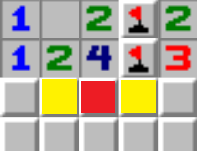
Wzorzec 2-4 ver 2
Cyfra "4" potrzebuje dwóch min (dwie ma w oflagowanych polach). Lewa "2" rezerwuje jedną minę w dwóch żółtych kwadratach. "4" dopełnia swój limit biorąc jedną minę z żółtej strefy, a drugą ze skrajnie prawego kwadratu (czerwone). Ponieważ "2" została w pełni zaspokojona przez żółtą strefę, cały lewy bok jest w pełni bezpieczny (zielone).

Wzorce liczbowe 50/50
Niestety rozpoznawanie wzorców nie zawsze grawantuje zwycięstwo. W wielu sytuacjach nie ma lepszej opcji i trzeba zgadywać, gdzie znajduje się mina.
Istnieją wersje gry saper w której sytuacje 50 na 50 są eliminowane, lecz oryginalna gra saper zawiera takie sytuacje. Jest to integralna część gry i nie można jej po prostu wyeliminowac.
Dwa pola i jedna mina
Najczęstsza sytuacja 50/50. W tej gracz musi wybrać na którym z dwóch pól znajduje się mina.
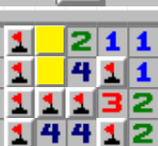
Inne dwa pola i jedna mina
Podobna sytuacja jak wyżej. Jest wiele podobnych sytuacji w grze z innymi cyframi.
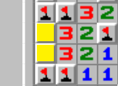
Cztery pola i dwie miny
Kolejnym przykładem jest sytuacja z czterema polami i dwiema minami.
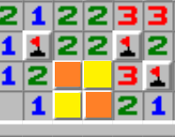
Podobna sytuacja jak wyżej.
Cyfra "4" potrzebuje dwóch min (dwie ma w oflagowanych polach). Lewa "2" rezerwuje jedną minę w dwóch żółtych kwadratach. "4" dopełnia swój limit biorąc jedną minę z żółtej strefy, a drugą ze skrajnie prawego kwadratu (czerwone). Ponieważ "2" została w pełni zaspokojona przez żółtą strefę, cały lewy bok jest w pełni bezpieczny (zielone).
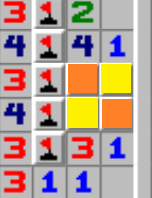
Jest bardzo wiele wzorców, które nie są jednoznaczne. Większość niejednoznacznych sytuacji występuje przy krawędzi planszy.